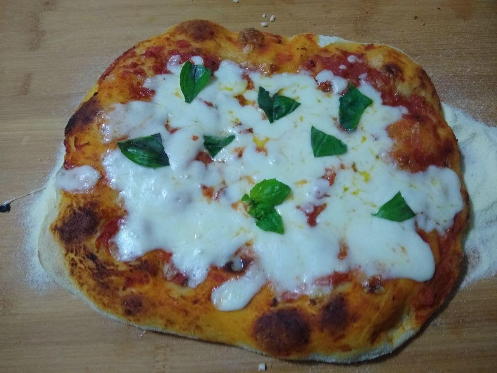
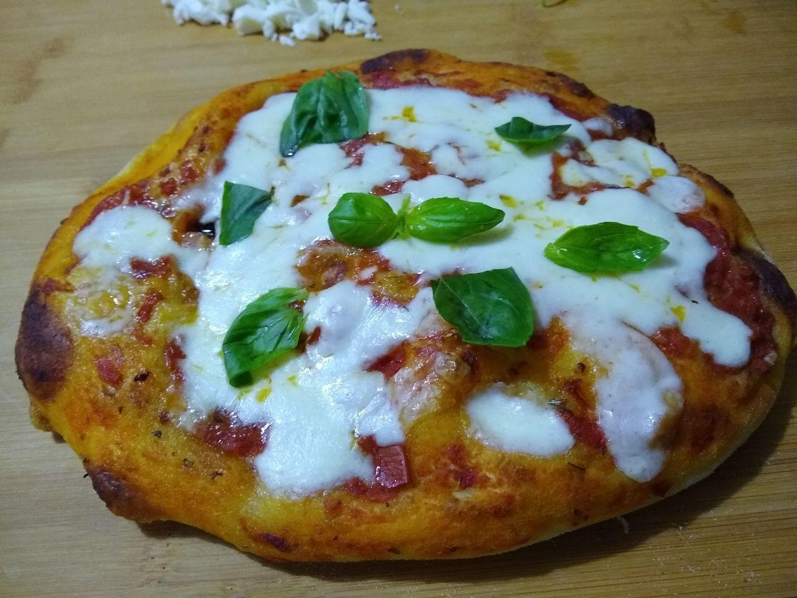
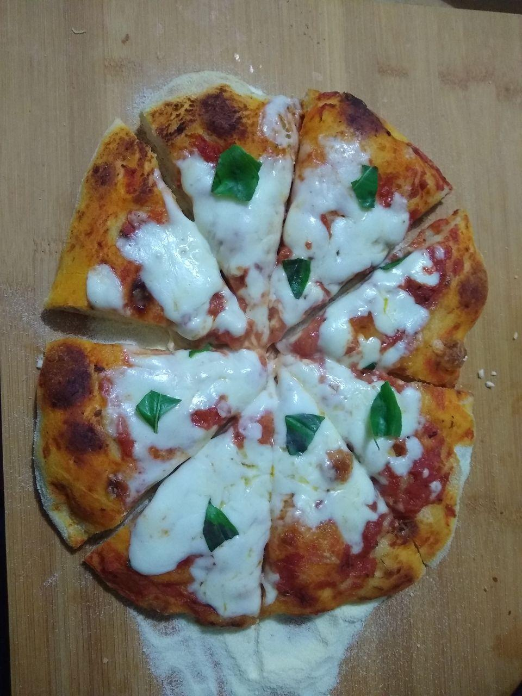
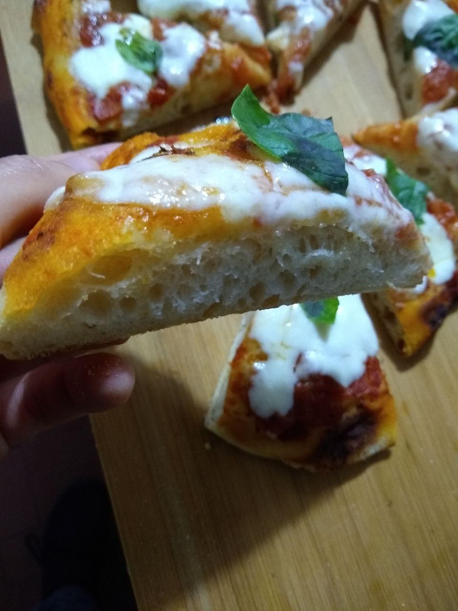
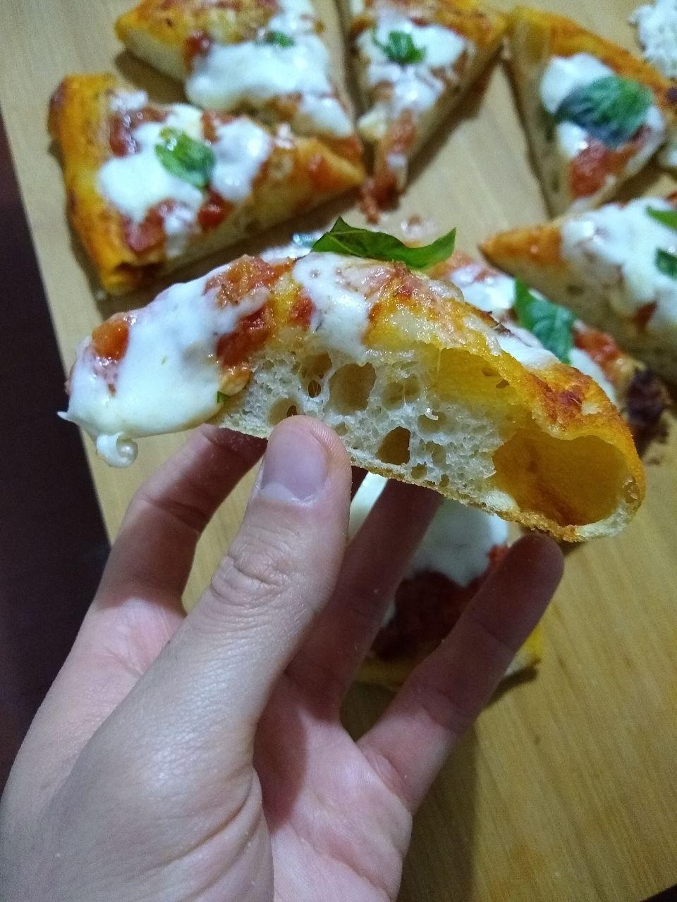

Pizza Recipe
This is a recipe for a pizza I make almost every Sunday evening for my family. I prepare the pizza dough 1 day beforehand, and bake it after 28 hours.
It makes for 2 delicious pizza bases with great alveolation and just the right thickness and softness while maintining a crunchy crust.
It's not my recipe though I've modified the flour mix.
I will do my best to write down all the directions. Here are my own results:





Ingredients
- 250g 12W flour (Caputo Pizzeria)
- 250g 12W flour (Caputo Nuvola)
- 300ml lukewarm water
- 3g fresh yeast
- 75ml lukewarm water
- 12g fine table salt
- 6g extra-virgin olive oil
- 1 can tomato sauce
- 250g fiordilatte or similar
- Basil leaves
- Mix flour and 300 ml water in a large bowl, stir with a wooden spoon for a short while until it becomes less sticky. Knead the dough in the bowl until all flour is absorbed and there is none left on the bottom. Flip the bowl onto your working area so as to cover with the bowl itself or cover with a lid and leave it to rest for 20 minutes.
- Add half of the salt and part of the 75ml of water, then squeeze firmly until it has been absorbed and none is left on your working area. Repeat this 4 times total, adding the other half of the salt on your 3rd or 4th time around.
- Knead vigorously with your wrists, and cover once more for 5 minutes. Pour half of the oil on your working space, and work the dough on top of it with your wrists, repeat once the oil has been absorbed the first time.
- Fold the dough on itself a few times, then gently place in an oil-coated container, close it and leave it for 1hr.
- Store the container in your fridge for 20 hours.
- The next day, pull the dough out at the same time you've started working on it the day before.
- Cut the dough ball in half, eyeball it. Fold the dough on itself and gently place in 2 oiled containers. Close the lid and leave them for 4hrs.
- Pour some semolina flour on your working space, gently place and spread the dough by lightly pressing at the center with your fingers. Cover with sauce or chosen toppings.
- Bake at max temp or 230C for 15 minutes or less, remove from oven to add cheese and bake for 5 more minutes.